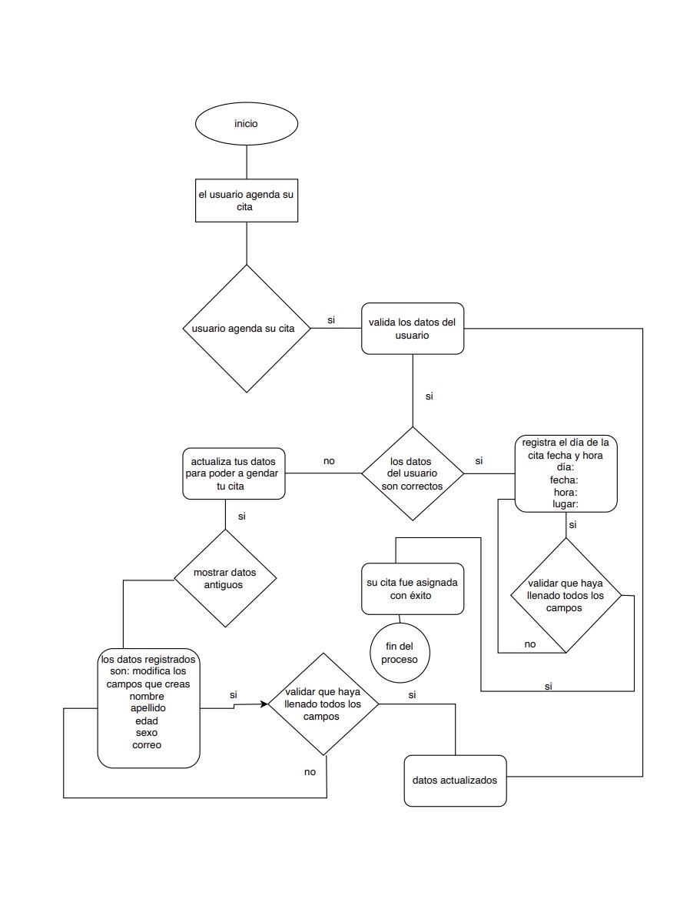
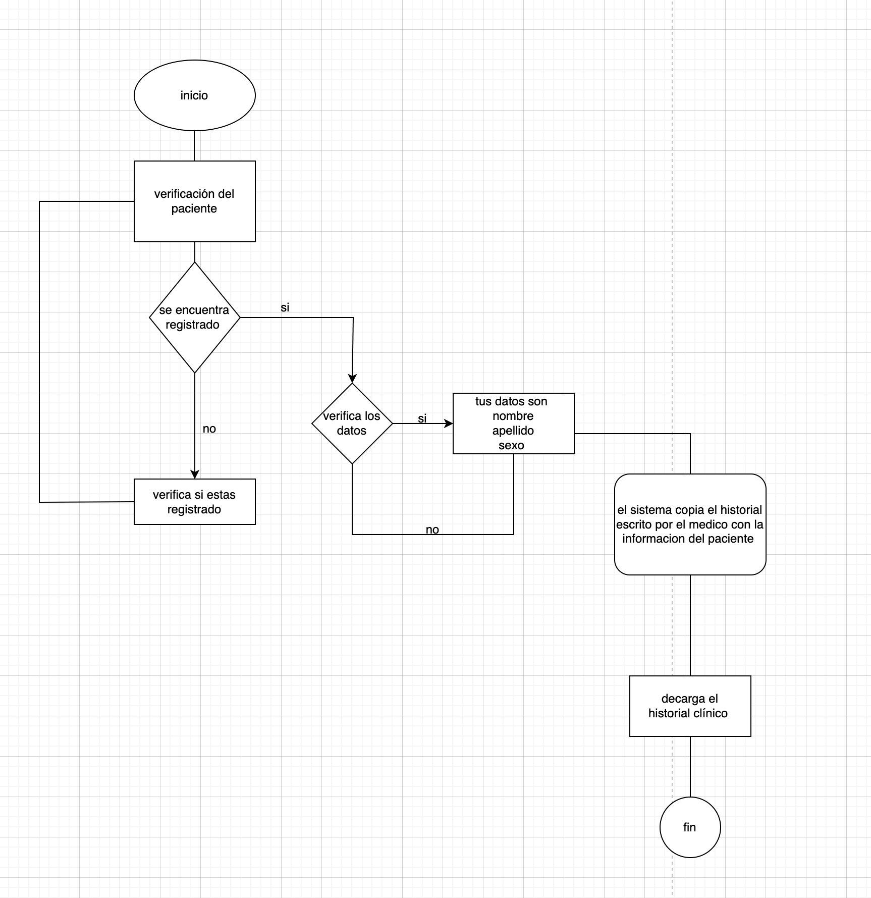

Introducción al modelado de funciones
El modelado de funciones es el proceso de identificar, documentar y representar las funciones que un sistema de software debe ofrecer para satisfacer las necesidades de los usuarios y del negocio. Su objetivo es transformar los requisitos en una representación visual que facilite:
- La comunicación entre analistas, desarrolladores y clientes.
- La validación temprana de los requisitos.
- La identificación de actores, procesos y flujos de información.
- La base para el diseño detallado y la implementación.
Uno de los artefactos más utilizados es el diagrama de casos de uso, que muestra los actores y las funcionalidades que el sistema debe proporcionar. A continuación, se presenta un caso práctico que ilustra la aplicación de estos conceptos.
Problema identificado
La clínica dental Sonrisa Perfecta es una pequeña empresa que actualmente maneja su gestión mediante una agenda manual en papel. Esto ha generado múltiples problemas:
- Pérdida de información y registros importantes.
- Confusiones en los horarios, lo que ocasiona pérdida de citas y largos tiempos de espera.
- Dificultad para hacer seguimiento de los historiales clínicos.
- Ineficiencia operativa que afecta la experiencia del paciente y la productividad del personal.
Por esta razón, se ha propuesto desarrollar un sistema de información que automatice la gestión de citas y el historial clínico de los pacientes, mejorando la eficiencia y la calidad del servicio.
Requerimientos Funcionales (RF)
Definen qué debe hacer el sistema.
RF-001: Agendamiento de citas por roles autorizados
Descripción: El sistema debe permitir a los usuarios con roles de Administrador o Recepción agendar una cita médica, seleccionando paciente, odontólogo, fecha y hora disponibles, y confirmando la cita.
Validaciones y Criterios de Aceptación:- Impedir agendamiento en horarios no laborales o sin disponibilidad.
- Alertar si el paciente tiene citas pendientes en un rango cercano.
- Validar disponibilidad en tiempo real y notificar a paciente/odontólogo.
RF-002: Validación de disponibilidad de horarios
Descripción: El sistema debe verificar en tiempo real la disponibilidad de horarios antes de confirmar una cita.
Criterios de Aceptación:- Consultar base de datos de agenda para verificar disponibilidad.
- Notificar y sugerir alternativas si el horario está ocupado.
- Registrar error y evitar confirmación en caso de doble asignación.
RF-003: Gestión de historiales médicos digitales
Descripción: Almacenar y organizar de manera segura el historial médico completo de cada paciente (tratamientos, diagnósticos, medicamentos y observaciones).
Requisitos Clave:- Estructura: Fecha, ID paciente, diagnósticos (CIE-10), tratamientos y medicamentos.
- Seguridad: Solo personal autorizado. Logs de auditoría. Encriptación en reposo y tránsito.
- Exportación: PDF o HL7 FHIR opcional.
RF-004: Gestión de cuentas de usuario (RBAC)
Descripción: Creación y modificación de cuentas asignando roles predefinidos (Recepción, Administrador, Odontólogo) con permisos específicos.
Criterios de Aceptación:- Campos obligatorios con contraseña encriptada.
- Validación en tiempo real para restringir funcionalidades no autorizadas.
- Bloqueo de cuenta tras 3 intentos fallidos de inicio de sesión.
RF-005: Notificación a pacientes
Descripción: Enviar notificaciones automáticas (SMS, email o WhatsApp) ante modificaciones en las citas, con al menos 24 horas de antelación.
RF-006: Notificación interna a odontólogos
Descripción: Generar notificaciones en la bandeja del sistema sobre cambios en los horarios asignados al odontólogo, antes del inicio de su turno.
Requerimientos No Funcionales (RNF)
Definen cómo debe comportarse el sistema.
RNF-001: Autenticación segura
Acceso a funcionalidades críticas mediante contraseñas seguras (mínimo 8 caracteres, mayúscula, número y símbolo). Uso de HTTPS/TLS y bloqueo tras 5 intentos fallidos.
RNF-002: Compatibilidad responsiva
Experiencia de usuario óptima en escritorio, tablets y smartphones. Uso de grids flexibles y botones con área táctil mínima de 48x48px (WCAG).
RNF-003: Configuración de horario laboral
Restringir operaciones de gestión de citas al horario laboral (7:00 AM - 7:00 PM, L-S). Bloqueo de funcionalidades fuera de horario excepto para roles administrativos.
RNF-004: Cifrado de historiales médicos
Garantizar el cifrado de datos sensibles en reposo (AES-256) y en tránsito (TLS 1.2+). Doble capa de seguridad: cifrado + RBAC.
Reglas de Negocio (RN)
RN-001: Control de creación de cuentas
La creación y asignación de roles estará limitada estrictamente al rol "Administrador", garantizando el mínimo privilegio.
RN-002: Gestión de citas por roles
Agendar, reprogramar y cancelar estará restringido a "Administrador" o "Recepción". Recepción solo gestiona su sede.
RN-003: Agendamiento único por slot
Cada slot de tiempo solo puede tener una única cita. El sistema sugiere alternativas si está ocupado. Solo el Administrador puede forzar con justificación.
RN-004: Notificación automática obligatoria
Cualquier cambio en la cita debe generar notificación inmediata (email, SMS o WhatsApp) con los datos del cambio.
RN-005: Restricción de múltiples roles
Ningún usuario podrá tener más de dos roles simultáneos para evitar conflictos de permisos. Superadministrador no cuenta para el límite.
Diagramas de Casos de Uso
Actores: Paciente, Odontólogo, Personal autorizado y Sistema.
Gestión de agenda
Muestra las interacciones para el agendamiento, modificación y visualización de citas.

Historial del paciente
Muestra las interacciones relacionadas con la consulta, registro y almacenamiento del historial clínico.

Modelo de Diseño y Usabilidad
Regla de Navegación
"Ninguna funcionalidad del sistema debe requerir más de 3 o 4 clics para ser alcanzada desde la pantalla principal."
Para cumplir con esta regla, el diseño debe incluir:
- Menús y accesos directos claros.
- Flujos de trabajo optimizados (agendamiento en pasos mínimos).
- Búsquedas inteligentes y filtros.
- Botones de acción principal visibles.
Anexo técnico: usabilidad e intuición
El sistema debe ser amigable para todos los perfiles:
- Interfaz limpia: Colores suaves y tipografía legible.
- Consistencia visual: Botones e iconos uniformes.
- Feedback inmediato: Confirmaciones visuales tras cada acción.
- Accesibilidad: Estándares WCAG 2.1 AA (contraste, navegación por teclado).
- Privacidad: Consentimiento explícito del paciente.
Reflexión sobre el taller
Este ejercicio fue desarrollado como un taller inicial para comprender el concepto de modelado de funciones. A través del caso de la clínica dental, pudimos:
- Identificar los actores (Paciente, Odontólogo, Administrador, Sistema).
- Extraer requerimientos funcionales y no funcionales detallando criterios de aceptación.
- Definir reglas de negocio formalizadas que condicionan el sistema.
- Establecer un modelo de diseño con restricciones de navegación.
- Representar gráficamente las funcionalidades mediante diagramas de casos de uso.
Este taller demuestra que antes de escribir una línea de código, es fundamental comprender el problema, los actores y las funciones. La documentación adecuada y el modelado visual son herramientas clave para garantizar el éxito del proyecto.